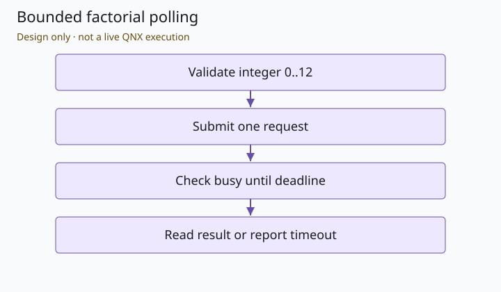
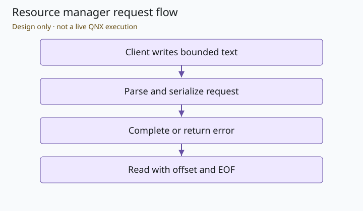
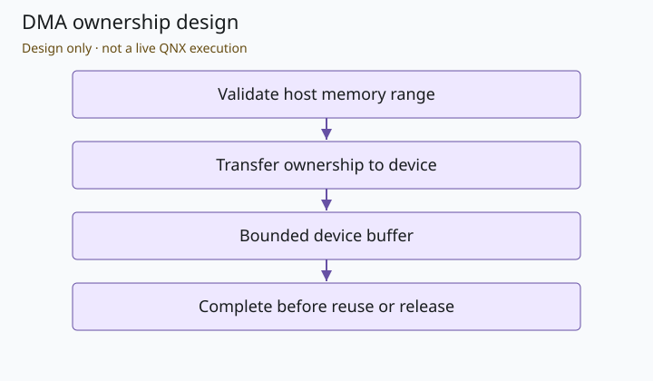

Write your first QNX 8.0 PCI driver in QEMU — blocked draft
Expanded private tutorial draft: build, crash diagnostics, and six acceptance boundaries.
Private checkpoint, 6 November 2026: licensed SDP 8.0 compiled the native diagnostic; QNX boots under QEMU 8.2.2 TCG. Checked per-thread I/O level1 recovered BAR mapping/factorial polling; corrected initial unmask handling passed a native one-shot IRQ; a 64-byte polled DMA round-trip is byte-exact. Normal resource-manager I/O now passes on QNX; robustness and full learner acceptance remain pending. QSTI provenance and complete target acceptance remain PENDING.
This is a private teaching draft, not an executable target tutorial. Host contracts and models are available; an experimental native diagnostic exists, and a polling resource manager passes normal-I/O checks, but full driver acceptance remains pending. Estimated durations are planning targets, not measured learner times. Do not publish until all live verification gates pass.
1. Setup
Planning estimate: 8 minutes
Mini-map: [1] → 2 → 3 → 4 → 5 → 6
Establish reproducible host and evidence boundaries.

Work through the contract
- Record host architecture, Python, make and QEMU version. ARM64 TCG is approved; KVM is not required.
- Keep SDKs, images and binaries outside the checkout, even ignored folders. Record authorized SDP build, QSTI version and image provenance when available.
Acceptance boundary
A clean clone runs host checks without third-party Python packages; full verification remains blocked.
Intended build: a QEMU edu PCI teaching driver. Learn PCI discovery, mapped I/O, polling, an interrupt service thread and a resource manager. Intended finish line: writing 10 and reading 3628800 via /dev/edu on QNX; normal-I/O checkpoint achieved, full learner acceptance pending. Need an authorized local SDP 8.0, pinned QSTI/QEMU image and a verified target. No hardware required in the proposed path.
Record SDP build, QSTI and QEMU versions, image provenance, target architecture and permissions; validate a clean boot.
Host (repository root):
make check-step1
Current expected output
BLOCKED: step 1 live QNX check not implemented or verified. Nonzero exit; no target command is available.
Starter: task. Solution: acceptance specification only.
Crash-first teaching draft
Before teaching IRQ or DMA, separate a successful compile from a successful target run. The earlier native/edu_probe.c diagnostic faulted before BAR evidence; checked per-thread I/O level1 now resolves that fault, and BAR/IRQ/polled-DMA pass. A PCI handle is not proof of mapped registers. Preserve private core/logs outside git; isolate BAR enumeration and verify installed library/header ABI before dereferencing MMIO. Retain a stop gate for any future failing BAR baseline; see the dated follow-up and native contracts for current evidence.
The shared CAN experiment now independently reconfirms 100/100 RX and 100/100 TX on 6 November, but only with explicit experimental PIRQ correction. It is not EDU interrupt evidence. SSH's OpenSSL capability workaround plus corrected helper packaging now passes config/start and a host-key handshake; authenticated login and the underlying fault remain unverified. Never present either workaround as a completed native tutorial.
2. PCI server attach
Planning estimate: 8 minutes
Mini-map: 1 → [2] → 3 → 4 → 5 → 6
Separate discovery from exclusive resource ownership.

Work through the contract
- Review installed QNX 8.0 PCI server declarations. The discontinued legacy PCI API is not the porting target.
- Validate device identity, BAR type and extent, interrupt route and ownership. Unwind partial acquisition in reverse order; never continue with an invalid handle.
Acceptance boundary
Missing device, duplicate owner and injected attach failures return nonzero without leaked resources.
Use locally reviewed QNX 8.0 PCI server declarations to enumerate and attach edu, inspect BAR metadata and detach cleanly.
Host (repository root):
make check-step2
Current expected output
BLOCKED: step 2 live QNX check not implemented or verified. Nonzero exit; no target command is available.
Starter: task. Solution: acceptance specification only.
3. ID and liveness
Planning estimate: 4 minutes
Mini-map: 1 → 2 → [3] → 4 → 5 → 6
A mapped address is not proof of a device protocol.

Work through the contract
- Register offsets and values remain withheld until every row has live pinned-QEMU evidence. Source inspection alone is insufficient.
- Validate width, alignment and bounds; check identity before writing. Test complementary liveness patterns and width-limited inverse readback. Unmap on failure.
Acceptance boundary
Wrong identity, failed mapping and out-of-bounds requests are bounded errors, never PASS.
After every relevant checklist row has live evidence, map the validated BAR range and perform bounded ID/liveness checks.
Host (repository root):
make check-step3
Current expected output
BLOCKED: step 3 live QNX check not implemented or verified. Nonzero exit; no target command is available.
Starter: task. Solution: acceptance specification only.
4. Factorial polling
Planning estimate: 4 minutes
Mini-map: 1 → 2 → 3 → [4] → 5 → 6
Use request ownership and a monotonic deadline.

Work through the contract
- Accept decimal integers 0 through 12 for this unsigned 32-bit teaching contract; larger factorials overflow.
- Serialize requests; busy hardware cannot silently replace pending work. Read only after completion, and distinguish timeout from valid input zero.
Acceptance boundary
Future QNX expectations: 0 and 1 return 1; 10 returns 3628800. These are mathematical expectations, not observed target results.
Implement a bounded wait, reject unsupported inputs, and observe the factorial finish line on the actual target.
Host (repository root):
make check-step4
Current expected output
BLOCKED: step 4 live QNX check not implemented or verified. Nonzero exit; no target command is available.
Starter: task. Solution: acceptance specification only.
5. Interrupt service thread
Planning estimate: 10 minutes
Mini-map: 1 → 2 → 3 → 4 → [5] → 6
Teach standalone interrupt ownership rather than io-sock assumptions.

Work through the contract
- Review actual InterruptAttachThread and InterruptWait declarations locally; no guessed signatures are supplied. Inspect IO and INTERRUPT abilities and active policy before attach.
- On EPERM capture the failing operation and inspect grants; do not recommend broad privilege. For INTx inspect owned status, acknowledge device sources, then follow documented unmask rules. InterruptAttachEvent is contextual for io-sock, not an interchangeable standalone sample.
Acceptance boundary
Test shared/unrelated IRQ, stale status, timeout, missing ability and repeated attach/detach. Delivery alone does not establish completion.
Review current InterruptAttachThread and InterruptWait declarations locally; verify ability failures, INTx status, acknowledgement, unmasking and clean detach.
Host (repository root):
make check-step5
Current expected output
BLOCKED: step 5 live QNX check not implemented or verified. Nonzero exit; no target command is available.
Starter: task. Solution: acceptance specification only.
6. Resource manager
Planning estimate: 10 minutes
Mini-map: 1 → 2 → 3 → 4 → 5 → [6]
Turn messages into a predictable client contract.

Work through the contract
- Define bounded decimal input with optional newline, partial-write behavior, per-open result ownership and serialization. Cap message size before parsing.
- Implement partial reads, offsets and EOF, errors without stale output and cancellation using actual installed resmgr declarations. Publish readiness last; process death does not reset hardware.
Acceptance boundary
Observed normal target acceptance: write 10 to /dev/edu and read 3628800. Full lifecycle acceptance remains pending. Test concurrent clients, malformed input, partial reads, death and re-probe.
Review resource-manager handlers locally; implement bounded input, concurrency, partial reads and error handling; observe the finish line and safe re-probe.
Host (repository root):
make check-step6
Current expected output
BLOCKED: step 6 live QNX check not implemented or verified. Nonzero exit; no target command is available.
Starter: task. Solution: acceptance specification only.
Congratulations — future acceptance only
Planning estimate: 0 minutes
You are not finished until a real target transcript proves every core step and two fresh agents reproduce the codelab from clean clones. No congratulations or 44-minute completion claim is earned by host CI.
Planning estimate: 0 minutes
DMA (estimated 10 minutes), restart/re-probe (4), tracing (5) are blocked. Validate the pinned QEMU DMA property, register semantics, physical-address handling and cache ownership before writing a DMA tutorial. Do not supply guessed commands or APIs.
Navigation and support
Planning estimate: 0 minutes
Mini-map: setup → PCI → ID/liveness → polling → IST → resmgr.
The verification checklist holds candidate register work separately; no offsets or values are taught here. Eight accessible SVG design diagrams with matching Mermaid sources are provided; they depict contracts, NOT verified target flows. SVG layout is rendered by the local deterministic script rather than claiming claat or Mermaid CLI execution. Local static rendering is tested separately; upstream claat export remains untested.
See troubleshooting and glossary.
Security and extra-credit design
Planning estimate: 0 minutes

The policy specification is not validated secpol syntax. IO and INTERRUPT are review areas, not proof only two grants suffice. A deny test must fail for the intended reason, not a missing binary.

Host model values are source-derived, NOT QNX. Reject DMA ranges beyond the configured mask instead of relying on address clamping. Never substitute a virtual pointer for a bus address. Keep device-buffer and host-memory extents separate and verify cache ownership using actual target documentation.
The restart contract handles partial acquisition and stale state. Process replacement does not reset hardware. Trace commands are withheld until installed tool arguments are verified; no invented tracelogger flags or timing claims.
The register evidence boundary documents successful live QEMU qtest register/INTx/DMA experiments, superseding the failed Linux sysfs probe; these are QEMU-device results, NOT QNX driver/API results. Mac and Windows paths remain UNTESTED.